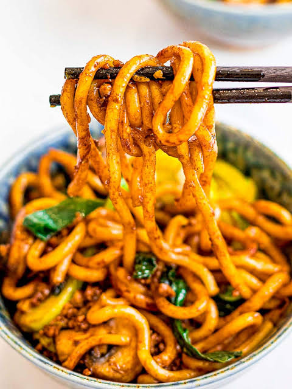

Udon Recipe

Description
This udon recipe is a comforting and filling dish that showcases the versatility of udon noodles.
Perfect for a warm meal on a cold day, this recipe is easy to follow and can be customized with your favorite vegetables and proteins.
Ingredients
- 200g udon noodles
- 2 tablespoons soy sauce
- 1 tablespoon mirin
- 1 teaspoon sugar
- 1 clove garlic, minced
- 1 tablespoon grated fresh ginger
- 1 can (400g) diced tomatoes
- 1 teaspoon dried basil
- Salt and pepper to taste
- Grated Parmesan cheese for serving
Steps
- Cook the udon noodles according to the package instructions. Drain and set aside.
- In a large skillet, heat the soy sauce over medium heat. Add the mirin and sugar. Stir well and let it simmer for 5-10 minutes, allowing the flavors to meld together.
- Add the minced garlic and grated ginger to the skillet. Stir well and let it cook for another 2-3 minutes until fragrant.
- Add the cooked noodles to the skillet and toss it with the sauce until well coated.
- Grated Parmesan cheese for serving
Home